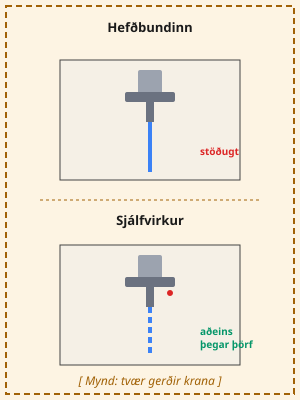
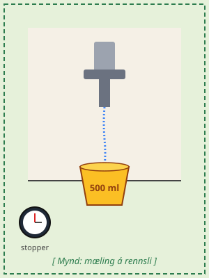
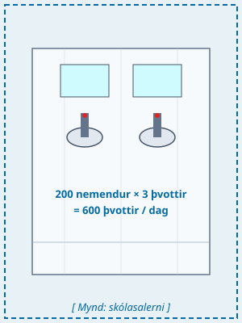

Sjálfvirkir vatnskranar — að mæla rennsli og meta sparnað
Námsmarkmið
Nemendur geta mælt rennsli vatnskrana í L/mín með einfaldri tilraun.
Nemendur geta notað formúlu til að reikna rennsli út frá magni og tíma.
Nemendur geta borið saman hefðbundna krana og sjálfvirka skynjarakrana.
Tími
60 mín
Búnaður
Mæliílát (500 ml eða 1 L), sími með stopparklukku, þetta vinnublað.
Inngangur
Hefur þú einhvern tímann opnað krana á salerni í skólanum og vatn rennur sjálfkrafa,
aðeins meðan þú heldur höndunum undir? Þetta eru dæmi um sjálfvirka skynjarakrana sem
spara vatn. Í þessu vinnublaði ætlar þú að mæla raunverulegt rennsli krana í skólanum
og reikna út hversu miklu vatni mætti spara ef öllum krönum væri skipt út fyrir sjálfvirka.
Fræðin

Mynd 1: Hefðbundinn krani vs. sjálfvirkur skynjarakrani.
Rennsli mælir hversu mikið vatn rennur úr krana á tilteknum tíma.
Algeng eining er lítrar á mínútu (L/mín). Til að finna rennslið
fyllir þú þekkt rúmmál (t.d. 500 ml dall) og tekur tímann sem það tekur.
Tvær algengar gerðir krana eru notaðar í skólum:
Hefðbundinn krani — opnast handvirkt og rennur óslitið þar til lokað er.
Sjálfvirkur skynjarakrani — opnast aðeins þegar hendur eru undir.
2025-1-HR01-KA220-VET- 000353056

Mynd 2: Mældu rennslið með 500 ml dalli.
Þú reiknar rennslið með þessari formúlu:
$$ Q = \dfrac{V}{t} \times 60 $$
Q = rennsli (L/mín)V = magn (L)t = tími (sek)
Sýnidæmi
Dæmi: 500 ml dallur fyllist á 6 sekúndum.
Skref 1: Breyta í lítra → 500 ml = 0,5 L.
Skref 2: Setja í formúluna → 0,5 ÷ 6 × 60 = 5,0 L/mín.
Skref 3: Krani sem hefur 5 L/mín og er opinn í 30 sek skilar 5 × 30 ÷ 60 = 2,5 lítrum á hvert handþvott.
Skref 4: Sjálfvirkur krani sem opnar í 12 sek skilar 1,0 L. Sparnaður: 1,5 L á hvert þvott.
Lykilhugtök
Hugtak
Skilgreining
Rennsli
Magn vatns sem rennur úr krana á tilteknum tíma. Mælt í L/mín.
Sjálfvirkur skynjari
Lítil rafeindabúnaður á krana sem nemur þegar hendur fara undir og opnar vatnið.
Meðalrennsli
Meðaltal margra mælinga á sama krana, til að jafna út lítil frávik.
Sparnaður
Mismunur á vatnsnotkun gamla og nýja kerfisins, oftast reiknað á ári.
2025-1-HR01-KA220-VET- 000353056
Verkefni nemanda 1
Mældu rennsli krana í skólanum
Veldu þrjú salerni í skólanum. Mældu rennslið á hverjum krana með því að fylla mæliílátið og taka tímann. Endurtaktu mælinguna að minnsta kosti tvisvar á hvern krana og skráðu meðaltalið.
●Krani 1 — staðsetning og meðalrennsli (L/mín):
●Krani 2 — staðsetning og meðalrennsli (L/mín):
●Krani 3 — staðsetning og meðalrennsli (L/mín):
●Hvert er meðalrennsli allra þriggja krananna?
Verkefni nemanda 2
Reiknaðu vatnssparnað

Mynd 3: 200 nemendur sem þvo sér 3× á dag = 600 handþvottir daglega.
Ímyndaðu þér að 200 nemendur þvoi sér um hendurnar þrisvar á dag í skólanum. Gefið er að gamli krani sé opinn í 30 sek á hvert þvott og sá nýi opinn í 12 sek. Skólaárið er 180 dagar.
●Hversu mörg lítrar fara í eitt handþvott með gamla krananum?
●Hversu mörg lítrar fara í eitt handþvott með sjálfvirka krananum?
●Hversu mörgum lítrum mætti spara á einu skólaári?
2025-1-HR01-KA220-VET- 000353056
Skilamyndband
Lokafurð verkefnisins
Til að ljúka verkefninu skiluð þið stuttu myndbandi (1–3 mín) sem sýnir mælingarferlið ykkar og niðurstöður.
Sýnið hvernig þið mældust krana (helst frá nokkrum sjónarhornum).
Lesið upp lykiltölurnar — meðalrennsli og sparnað í lítrum á ári.
Takið afstöðu í lok myndbandsins: er fjárfesting í sjálfvirkum krönum þess virði?
Dæmi um gott nemendamyndband
Skannaðu QR-kóðann eða farðu á slóðina til að horfa: